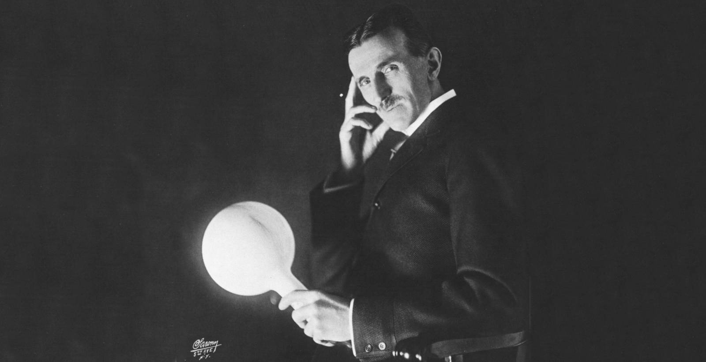
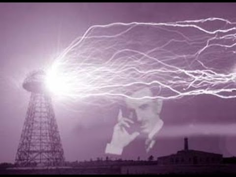

Цікаві факти про загадкового повелителя електрики
Ніколо Тесла народився під час страшної грози 9 липня 1856 року.Тесла був, як би тепер сказали, прихильником захисту навколишнього середовища, тому він вивчав способи отримання первинної енергії з природних джерел - землі і повітря.Хоча у нього були досить відомі друзі, сам Тесла ніколи не був таким вже багатим або знаменитим. Його більш заповзятливі колеги досягали більшого успіху (наприклад, Томас Едісон).Тесла дуже добре грав в більярд. Відомо навіть, що він шахраював у грі.Тесла стверджував, що спить тільки 2 години вночі (хоча зізнавався, що міг прилягти відпочити і вдень).Хоча суперництво між Едісоном і Теслою стало чимось на зразок легенди, історики відзначають, що насправді вони ставилися один до одного з великою повагою. Едісон навіть надав Теслі лабораторію, коли пожежа знищила власну лабораторію Тесли.Тесла славився своєю геніальною фотографічною пам 'яттю. Він навіть міг запам 'ятати цілі книги!Одна з причуд Тесли полягала в тому, що він ненавидів торкатися до волосся.Він був одержимий числом 3.Одним з видатних винаходів Тесли була вежа висотою близько 57 метрів, яку він побудував на Лонг-Айленді. Вона призначалася для "висмоктування" "електрики з повітря. Однак 1917 року її знесли, щоб він міг продати землю і розплатитися з кредиторами.Однією з найдивніших причуд Тесли була огида до круглих предметів!У дитинстві Теслу мучили нічні кошмари, і як вважають історики, пізніше в житті це допомогло йому подумки представляти свої винаходи, причому дуже виразно.У якийсь момент Тесла побачив у своїй уяві і рентген і радар.
Змінний струм
З 1889 Тесла приступив до досліджень струмів високої частоти і високої напруги. Винайшов перші зразки електромеханічних генераторів ВЧ (у тому числі індукторного типу) і високочастотний трансформатор (трансформатор Тесли, 1891), створивши тим самим передумови для розвитку нової галузі електротехніки — техніки ВЧ.
У ході досліджень струмів високої частоти Тесла приділяв увагу і питанням безпеки. Експериментуючи на своєму тілі, він вивчав вплив змінних струмів різної частоти і сили на людський організм. Багато правил, вперше розроблені Теслою, увійшли в сучасні основи техніки безпеки при роботі з ВЧ-струмами. Він виявив, що при частоті струму понад 700 Гц електричний струм протікає по поверхні тіла, не завдаючи шкоди тканинам організму. Електротехнічні апарати, розроблені Теслою для медичних досліджень, набули широкого поширення у світі. Експерименти з високочастотними струмами великої напруги призвели винахідника до відкриття способу очищення забруднених поверхонь. Аналогічний вплив струмів на шкіру показав, що таким чином можливо видаляти дрібний висип, очищати пори і вбивати мікроби. Цей метод використовується в сучасній електротерапії.
Радіо
Проєкт «Ворденкліф»
В основу проекту ввійшла дерев'яна вежа висотою 57 м із куполом діаметром 21 м. В основу купола лягло 55 т сталі та міді. Під вежею розташовувалася будівля лабораторії, у якій здійснювався контроль та управління роботою об'єкта.Вежа «Ворденкліф» є першим прототипом сучасних радіовеж. Шляхом експериментів, здійснених на ній, Нікола Тесла довів можливість передачі радіосигналу на великі відстані.Радіовежа стала першою на шляху комерціалізації телекомунікацій.У 60 км на північ від Нью-Йорка на острові Лонг-Айленд Нікола Тесла придбав ділянку землі, що межує з володіннями Чарльза Вордена. Ділянка площею 0,8 км² знаходився на значній відстані від поселень. Тут Тесла планував побудувати лабораторію та наукове містечко. На його замовлення архітектором В. Гроу був розроблений проект радіостанції - 47-метрової дерев'яної каркасної вежі з мідною півкулею нагорі. Спорудження подібної конструкції з дерева породжувало безліч труднощів: через масивну півкулю центр ваги будівлі змістився вгору, позбавляючи конструкцію стійкості. Насилу вдалося знайти будівельну компані яка взялася за реалізацію проекту. Будівництво вежі завершилося в 1902. Тесла оселився в невеликому котеджі неподалік. Виготовлення необхідного обладнання затягнулося, оскільки фінансував його промисловець Джон Пірпонт Морган розірвав контракт після того, як дізнався, що замість практичних цілей з розвитку електричного освітлення Тесла планує займатися дослідженнями бездротової передачі електрики. Дізнавшись про припинення Морганом фінансування проектів винахідника, інші промисловці також не захотіли мати з ним справи. Тесла змушений був припинити будівництво, закрити лабораторію і розпустити штат співробітників. Розплачуючись з кредиторами, Тесла змушений був продати земельну ділянку. Башта виявилася занедбаною і простояла до 1917, коли федеральна влада запідозрила, що німецькі шпигуни використовують її у своїх цілях і недобудований проект Тесли підірвали.
Міфологія
Досліди Тесли пов'язували з проблемою Тунгуського метеорита та «експериментом Філадельфія». Зокрема, припускають, що так званий Тунгуський метеорит насправді не був метеоритом, а трагедія була викликана черговим експериментом Тесли. Стверджують, що ФБР вилучило всі папери Тесли, які залишилися після його смерті.